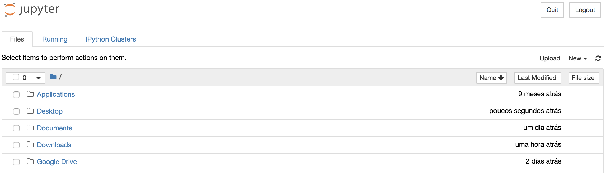
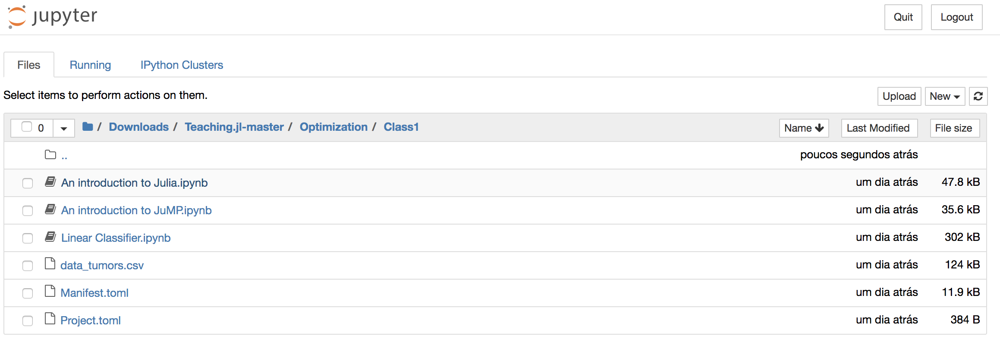
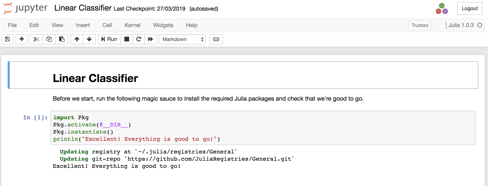

Jupyter Notebook (Accessing class materials)
All class materials are available via jupyter notebooks. Here we provide a simple guide to accessing them.
Install Julia
To get started, you first need to install Julia (if you haven't already).
- Download and install Julia v1.0.3 from https://julialang.org/downloads/.
Download the materials
To get the class materials download this zip file and uncompress it to a folder of your choice. This will create a sub-folder Teaching.jl-master with all the materials.
Open Julia
Now open Julia by clicking on the Julia icon you installed. Once open, you should be faced with the Julia REPL (Julia's interactive command prompt) that looks like this:

Install Jupyter
Now we need to install Jupyter. In the Julia REPL, run the following commands (this may take a little bit of time):
import Pkg
ENV["JUPYTER"]=""
Pkg.add("Conda")
Pkg.add("IJulia")
import Conda
Conda.add("jupyter")Open a Jupyter notebook
Okay, last step, let's launch a Jupyter notebook! Open a Julia REPL and then run:
using IJulia
IJulia.notebook()If all goes well, a browser window will open that looks like this:

You can then navigate to the location of where you uncompressed the Teaching.jl-master repository folder and navigate to the class of your choice

To get started on the class, click on the first notebook entitled Linear Classification.ipynb.

Using the Default Packages in a Class
The files Project.toml and Manifest.toml contain the information about versions of the default tutorial packages that we know work well. These packages can be activated by running the following code in any Jupyter notebook in the Teaching.jl-master folder:
import Pkg
Pkg.activate(@__DIR__)
Pkg.instantiate()You will see this as the first code cell in all notebooks and you should add it to all the notebooks you create.